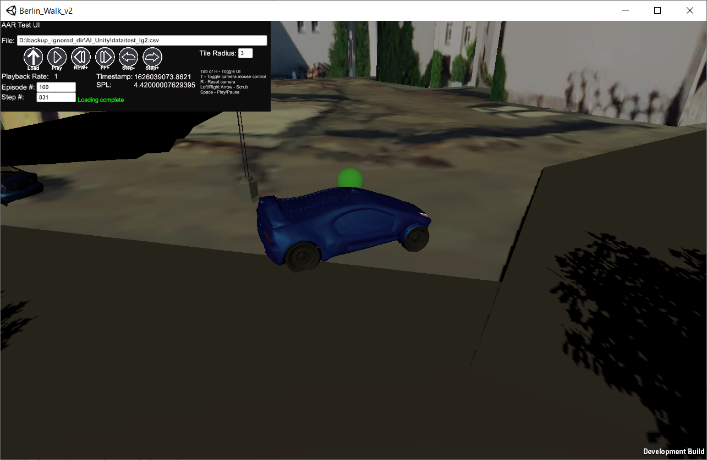

ARORA actions playback (AAR Mode)#
The AAR mode uses the vector observation files created by the AroraGymEnv.
Ensure that you execute ArooraGymEnv with the save_vector_obs set to True,
this will store a file called env_logs/vec_obs.csv.
Execute the berlin executable with the
-playbackswitch.

2. Type in the full path to the vec_obs.csv file into the text input field. Either type a return at the end, or click the load icon.
3. See the UI guidelines for further details.
UI Guidelines#

The full path to the observation file should be entered in this field.
Loads the observation file listed in 1. This should only be done once.
Play – plays the episode in 7, at the rate specified by the playback rate
Rewind+, reduces the playback speed by 1x.
FF+, reduces the playback speed by 1x.
Increase or decrease the agent step by a single step.
Jump to an episode number, or step number. Jumping to a new episode number will cause the local scene to be (re)loaded.
Keystoke legend: T- Toggles mouse controls for the viewpoint. R- Resets the camera to a relative location. L/R Arrow Key- Scrub the scene forward or backward. Space Bar- Pause or Resume the AAR replay. Tab/H Key- Hides or reveals this UI.
Tile radius- potentially provides improvement in performance or provides increased environment visibility depending on the terrain tile radius entered.